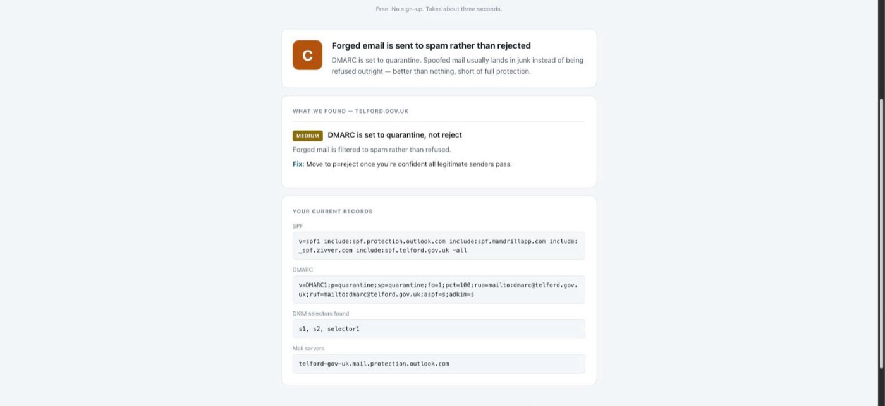

Can a stranger send email that looks like it came from your domain?
Enter any domain. Everything below is read from public DNS records — the same data a
receiving mail server reads to decide whether to trust a message. Nothing is scanned,
nothing is probed, and no permission is required.
The check runs entirely in your browser. There is no server: the page
resolves DNS directly over DNS-over-HTTPS, so the domain you type is never sent to me
and nothing about your lookup is logged anywhere.
Accepts a domain, a URL or an email address. Roughly a dozen DNS lookups, run in parallel.
F — no DMARC record at all. Anyone on the internet can send mail as
this domain and receivers have no instruction to stop it.
E — DMARC exists but is set to p=none. That is monitoring
only; forged mail still arrives in the inbox.
D / C — p=quarantine. Forged mail is filtered to spam
rather than refused. D means the policy is applied to only a percentage of mail.
B / A — p=reject. Receivers refuse forged mail outright.
A also requires SPF to end in -all.

<selector>._domainkey.<domain>, and the
selector is chosen by whoever set up the mail — it is not published anywhere in DNS and
cannot be enumerated. The check works backwards from your MX records to guess the
selectors your mail provider normally uses, then tries a handful of common ones.Authentication-Results header of a message you have actually
sent.Email spoofing is the cheapest attack there is. If a domain has no enforcing DMARC policy, anyone can send invoices, payment-detail changes or password resets that appear to come from the finance director — no compromise required, no credentials needed, and nothing on the target's network is touched. It is the foundation of most business email compromise, and it is fixed with three DNS records.
The wider point is architectural: this is the only genuinely useful security finding that can be produced without touching the target at all. That makes it something a business can run on itself in three seconds, rather than something that needs a scope document and written authorisation.
No backend at all. Both Cloudflare and Google publish DNS-over-HTTPS endpoints that
allow cross-origin requests, so the page resolves DNS itself: TXT records for SPF and
_dmarc, MX records to identify the mail provider, and provider-specific
DKIM selectors probed in parallel. Cloudflare is tried first and Google is the fallback,
because some networks block one or the other — and someone on a locked-down corporate
connection is exactly who wants this answer.
Running client-side removes the server, the hosting account and the bill, but the better
reason is that each visitor's lookups come from their own connection rather than one
shared IP. There is no rate limit to police and no IP reputation to protect.
The scoring logic is separated from the network layer and covered by 38 tests running
against fixtures. That separation matters more than it sounds: every well-configured
domain grades A to C, so live testing never exercises the failure paths. The F and E
grades, +all, duplicate records and the SPF ten-lookup limit exist only in
the test fixtures.
The public endpoint is rate limited per IP. Without that cap, a free DNS lookup form is a bulk reconnaissance tool running on someone else's IP reputation.